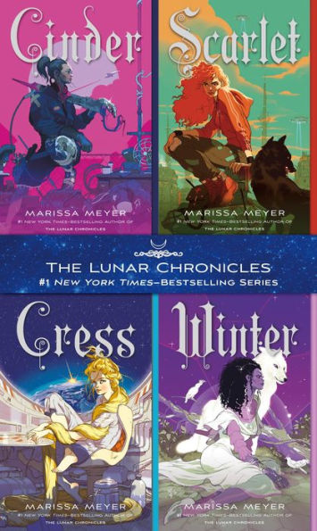

Cinder, Scarlet, Cress, Winter
Found Cinder series by looking for Young Adult Novels similar to 3 Dark Crown series. I was looking for a book with a story of
supernatural powers and power struggles. This book satisfied that craving which is why I actually finished it in the span of a couple weeks and am just writing
a review now.
I actually don't remember much about this other than that each protagonist follows a specific
fairy tale story. Cinder is the Cinderella story, Scarlet is the Little Red Riding Hood story, and Cress is the Rapunzel story.
I think the book was good at using the original fairy tales and adding a twist to it.
I don't have much more to write. It just overall feels like an anime and also have themes similar to avatar the last airbender where
you come together with a team and the main character has to face a lot of challenges with growing up in a sense.